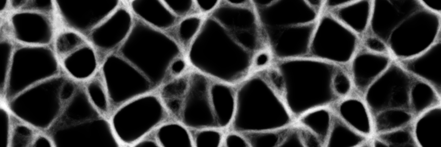
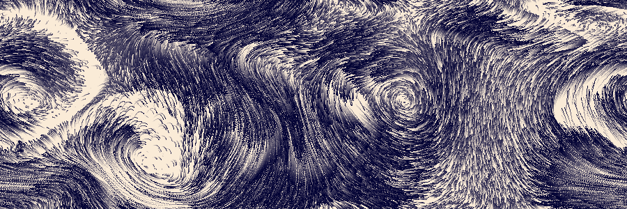
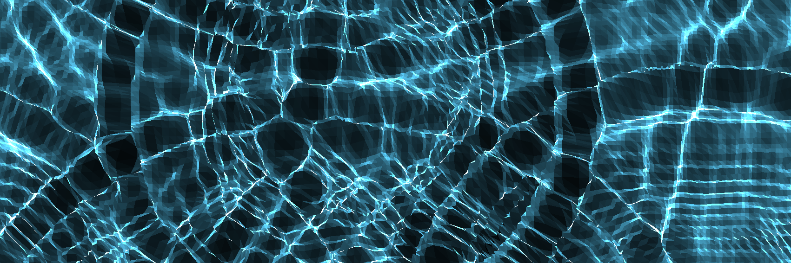
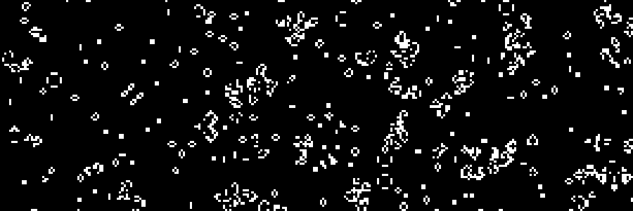

<meta name="viewport" content="width=device-width, initial-scale=1">
<link rel="stylesheet" href="./common/github-markdown.css">
<style>
	.markdown-body {
		box-sizing: border-box;
		min-width: 200px;
		max-width: 980px;
		margin: 0 auto;
		padding: 45px;
	}

	@media (max-width: 767px) {
		.markdown-body {
			padding: 15px;
		}
	}
</style>
<article class="markdown-body">
<h1 id="gpu-io-examples">gpu-io Examples</h1>
<p><a href="https://github.com/amandaghassaei/gpu-io">gpu-io</a> is a GPU-accelerated computing library for physics simulations and other mathematical calculations.  This page contains a series of interactive examples applications that demonstrate key capabilities of the library.</p>
<p>gpu-io source code: <a href="https://github.com/amandaghassaei/gpu-io">github.com/amandaghassaei/gpu-io</a><br>examples source code: <a href="https://github.com/amandaghassaei/gpu-io/tree/main/examples">github.com/amandaghassaei/gpu-io/examples</a>  </p>
<h2 id="grid-based-simulations">Grid-Based Simulations</h2>
<h3 id="reaction-diffusion"><a href="https://apps.amandaghassaei.com/gpu-io/examples/reaction-diffusion/">Reaction Diffusion</a></h3>
<p><a href="https://apps.amandaghassaei.com/gpu-io/examples/reaction-diffusion/"></a><br>This app simulates a simple <a href="https://en.wikipedia.org/wiki/Reaction%E2%80%93diffusion_system">reaction-diffusion system</a>, where two virtual chemicals interact to create dynamic patterns.  Similar systems were proposed by <a href="https://www.dna.caltech.edu/courses/cs191/paperscs191/turing.pdf">Alan Turing in 1952</a> as a mechanism for pattern formation in plants and animals.  This reaction-diffusion system is particularly sensitive to two parameters: K (varies along x-axis) and F (varies along y-axis).  You can interactively explore regions of K,F parameter space by zooming and panning across the screen.</p>
<h2 id="particle--grid-simulations">Particle + Grid Simulations</h2>
<h3 id="physarum-transport-network"><a href="https://apps.amandaghassaei.com/gpu-io/examples/physarum/">Physarum Transport Network</a></h3>
<p><a href="https://apps.amandaghassaei.com/gpu-io/examples/physarum/"></a><br>This app simulates the network effects of a multicellular slime mold (Physarum polycephalum), based on a 2010 paper by Jeff Jones: <a href="https://uwe-repository.worktribe.com/output/980579">&quot;Characteristics of pattern formation and evolution in approximations of Physarum transport networks&quot;</a> and work by <a href="https://cargocollective.com/sagejenson/physarum">Sage Jenson</a>.  In this simulation, simple particle &quot;agents&quot; interact with an underlying field of chemical attractants to form complex, emergent behaviors.</p>
<h3 id="fluid-simulation"><a href="https://apps.amandaghassaei.com/gpu-io/examples/fluid/">Fluid Simulation</a></h3>
<p><a href="https://apps.amandaghassaei.com/gpu-io/examples/fluid/"></a><br>This simulation solves the <a href="https://en.wikipedia.org/wiki/Navier%E2%80%93Stokes_equations">Navier-Stokes equations</a> for incompressible fluids. The fluid visualization includes thousands of <a href="https://en.wikipedia.org/wiki/Lagrangian_particle_tracking">Lagrangian particles</a> that follow the velocity field and leave behind semi-transparent trails as they move.</p>
<h2 id="threejs">ThreeJS</h2>
<h3 id="2d-wave-equation"><a href="https://apps.amandaghassaei.com/gpu-io/examples/wave2d/">2D Wave Equation</a></h3>
<p><a href="https://apps.amandaghassaei.com/gpu-io/examples/wave2d/"></a><br>This app simulates the <a href="https://en.wikipedia.org/wiki/Wave_equation">2D wave equation</a> and renders the resulting height field as a 3D mesh  Additionally, it simulates realtime <a href="https://en.wikipedia.org/wiki/Caustic_(optics)">caustics</a> formed by light shining through the 3D surface and renders the result as a texture (<a href="https://medium.com/@evanwallace/rendering-realtime-caustics-in-webgl-2a99a29a0b2c">method described in more detail by Evan Wallace</a>).  All computations are performed in gpu-io and the results are passed to <a href="https://threejs.org/">Threejs</a> without ever leaving the GPU.</p>
<h2 id="simple-examples">Simple Examples</h2>
<h3 id="conways-game-of-life"><a href="https://apps.amandaghassaei.com/gpu-io/examples/gol/">Conway&#39;s Game of Life</a></h3>
<p><a href="https://apps.amandaghassaei.com/gpu-io/examples/gol/"></a><br>The 1-bit cellular automaton <a href="https://en.wikipedia.org/wiki/Conway%27s_Game_of_Life">Conway&#39;s Game of Life</a>.</p>
<h3 id="julia-set-fractal"><a href="https://apps.amandaghassaei.com/gpu-io/examples/fractal/">Julia Set Fractal</a></h3>
<p><a href="https://apps.amandaghassaei.com/gpu-io/examples/fractal/"></a><br>This app renders 2D <a href="https://en.wikipedia.org/wiki/Julia_set">Julia set</a> fractals for a variety of input parameters.</p>

</article>